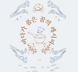

“민호야, 머릿속에 복잡할 땐 바다로 가보렴. 바다의 이야기에 귀 기울여봐.”
어부는 죽어도 되기 싫은 민호. 요리사라는 꿈을 가지고 있지만 그가 사는 곳에서는 호락호락 하지 않다. 그렇게 살다 어느 날 기적이 찾아온걸까? 전국요리자랑 프로그램에 출연하게 된다. 하지만 결전의 순간, 찾아온 거대한 고민. 민호는 이 고민을 풀고 진정 요리사로 거듭날 수 있을까?
뒤로 가기
구매